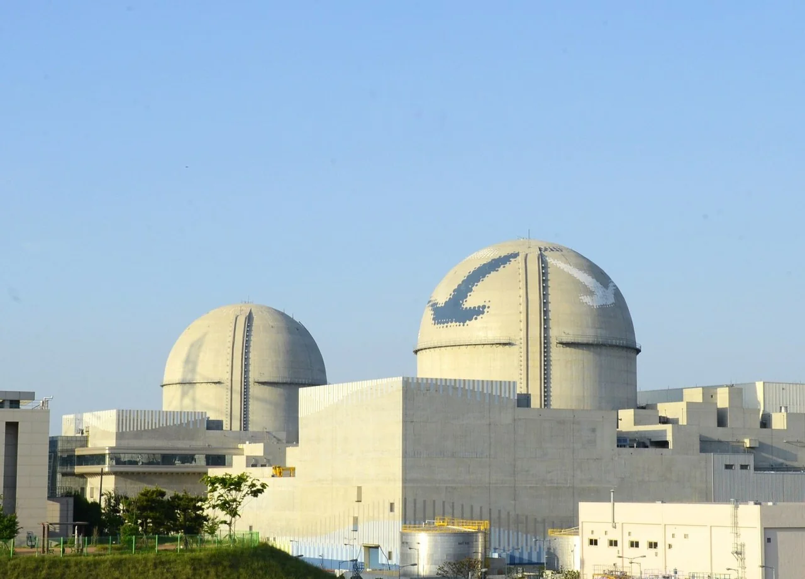
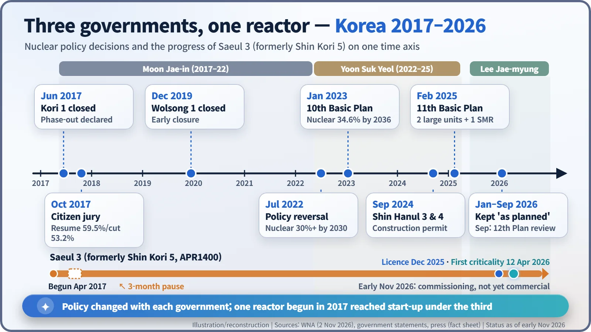
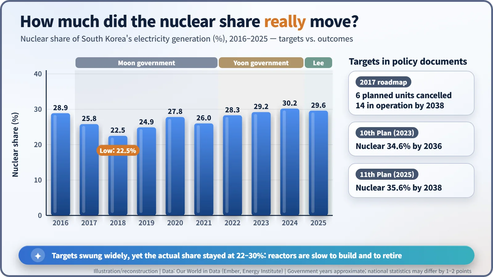

Nuclear History · 296
The Reactor That Outlasted Three Presidents — South Korea's Nuclear Policy Shifts (2017–2026)
A citizens' panel voted 59.5% to finish two reactors in 2017, policy reversed in 2022, and the reactor at the centre of it all reached criticality in April 2026.
South Korea, which gets roughly 30% of its electricity from nuclear power, has reversed its nuclear policy twice in less than a decade. A 2017 phase-out plan was followed by a citizens' panel that voted to finish two reactors already being built, a 2022 reversal set higher nuclear targets, and since 2025 a new government has confirmed new reactors after another round of public consultation.
A reactor with a long CV
If reactors kept a CV, one on the coast of Ulju County near Ulsan would already have a long one. Construction began in April 2017. Three months later, work was suspended. Then it resumed. Along the way its name changed from Shin Kori 5 to Saeul 3. On 12 April 2026 it reached first criticality. In those nine years South Korea changed presidents three times, and its nuclear policy turned sharply twice. This reactor makes a good guide to that story. [1]

A nuclear heavyweight with growing doubts
By the mid-2010s, nuclear power supplied about 30% of South Korea's electricity. But questions about safety had been piling up: the Fukushima accident in 2011, a scandal in 2012–2013 over forged test certificates for reactor parts, and a magnitude 5.8 earthquake near Gyeongju on 12 September 2016, in a region crowded with nuclear plants.
2017: handing the decision to 471 citizens
At midnight on 18 June 2017, Kori 1, the country's first nuclear power reactor, was permanently shut down. At a ceremony the next day, President Moon Jae-in (1953–) said the country would move away from a nuclear-centred power policy, cancel plans for new reactors and stop extending the design lives of existing ones. It became widely known as the nuclear phase-out; the government's own term was "energy transition". [1]
The question immediately became what to do with Shin Kori 5 and 6, which were already under construction. In mid-July the board of the operator, Korea Hydro & Nuclear Power (KHNP), suspended work for three months, and the government asked a public deliberation committee to decide. A randomly selected citizens' panel studied briefing materials, heard both sides and spent three days in a residential debate. This is "deliberative polling": instead of asking people what they think on the spot, it asks what they think after they have studied the issue.
The final survey, announced on 20 October 2017, was clear on one point and nuanced on another. Of 471 participants, 59.5% favoured resuming construction and 40.5% favoured stopping it. Yet in the same survey 53.2% said nuclear power should be reduced, the most common answer (35.5% said maintain, 9.7% expand). Finish the reactors, in other words, but shrink nuclear in the long run. [5]
On 24 October the cabinet confirmed that construction would resume and approved an energy transition roadmap: cancel six planned reactors, allow no lifetime extensions, and raise the renewable share of generation to 20% by 2030. It did not mean switching reactors off at once. Plants would close as their licences ran out, shrinking the fleet over decades; press reports put the operating fleet at 14 reactors by 2038. Wolsong 1 was permanently shut down on 24 December 2019.

2022: turning the wheel the other way
Yoon Suk Yeol (1960–), who took office in May 2022, abandoned the phase-out. A policy statement approved by the cabinet in July set a target of at least 30% nuclear power by 2030, citing energy security, carbon neutrality and reactor exports. The 10th Basic Plan for Electricity Supply and Demand, released in January 2023, aimed for a 34.6% nuclear share by 2036. [1]
Shin Hanul 3 and 4, a project halted in 2017, received a construction permit from the Nuclear Safety and Security Commission (NSSC) on 12 September 2024. In February 2025 the 11th Basic Plan added two new large reactors and one small modular reactor (SMR), and the same month the National Assembly passed a special act on high-level radioactive waste. It requires an interim storage facility for spent fuel by 2050 and a permanent disposal facility by 2060. [2]
After 2025: asking the public again
Lee Jae-myung (1963–) took office on 4 June 2025, after his predecessor had been removed from office, and energy policy moved to a new Ministry of Climate, Energy and Environment. In December 2025 Minister Kim Sung-hwan said the new reactors in the 11th Plan would be put to public deliberation again. After two policy debates and a survey of 3,000 people (12–16 January 2026), he announced on 26 January 2026 that the reactors would go ahead as planned. In the surveys as reported, 69.6% (Gallup Korea) and 61.9% (Realmeter) supported proceeding. According to the World Nuclear Association, Yeongdeok was chosen in June 2026 as the candidate site for the two large reactors and Gijang, in Busan, for the SMR. In September a three-month public review began on nuclear power's role in the 12th Basic Plan. [6] [1]
And our reactor? Saeul 3 received its operating licence on 30 December 2025, in a 5-to-1 NSSC vote of its six sitting members, and reached first criticality on 12 April 2026. During commissioning it shut down automatically in August, and on 6 September operators shut it down manually after a leak in a drain line for turbine steam condensate. KHNP said there was no radiological impact. As of early November 2026 it had not yet entered commercial operation. [7] [3]
Policy moves fast; reactors move slowly
So how much did the nuclear share actually change? It was 28.9% in 2016, fell to a low of 22.5% in 2018, and reached 30.2% in 2024 and 29.6% in 2025. Some analysts note that heavy maintenance and inspection outages coincided with the 2018 dip, so it cannot be put down to policy alone. [4]

The reason is the clock reactors run on. Building one usually takes seven to ten years, and operating it 40 to 60. A five-year presidential term is only a slice of that life, which is how a project started under one government can be finished under another.
Which side was right is not for this article to judge. What the past nine years do show is that nuclear policy is not only a question of technology. It is also a question of how a society builds agreement, and through what procedures.